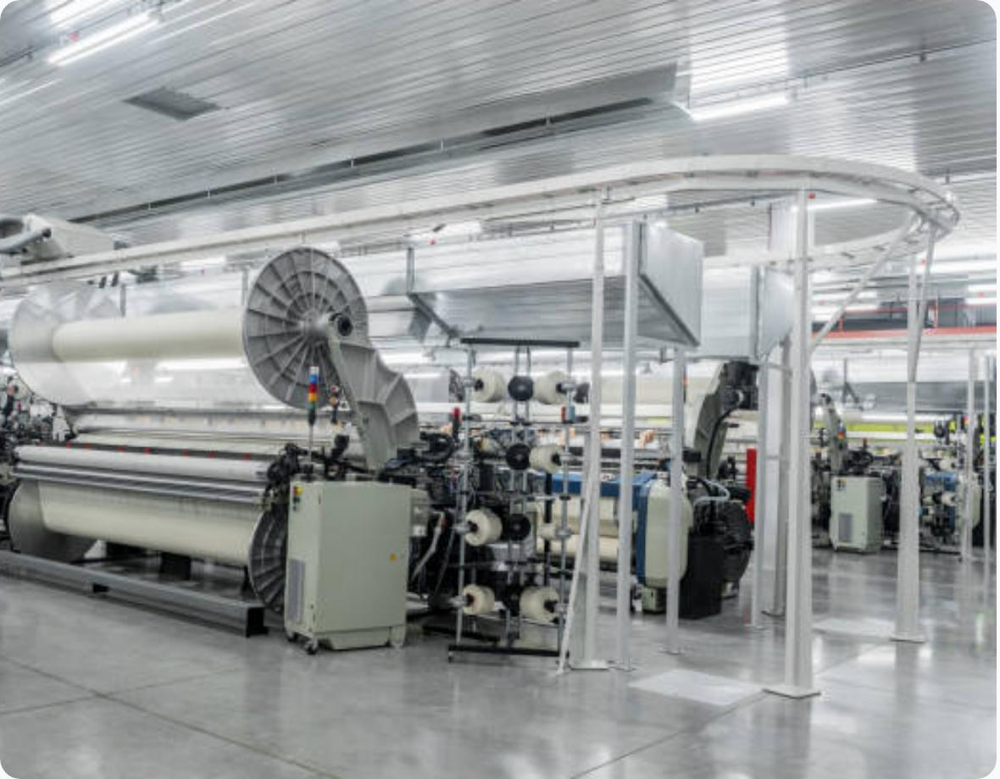

Industrial Textile Intelligence Platform
"From Physical Factory Operations to Intelligent Digital Manufacturing."
# AutoTaskX Edge Gateway Telemetry Daemon v2.4
CONNECT "coaps://iot.autotaskx.io:5684" [OK]
DEVICE urn:dev:plc:fong-jet-04 attached
BIND IPSO 3303 (Temp) + IPSO 3323 (Bar) -> 124ms
VISION Basler racer 2 L (16K @ 60kHz) -> CXP-12 [READY]
HYPERTABLE TimescaleDB: 142k writes/sec chunked
ERP BRIDGE Datatex NOW + SAP S/4HANA [SYNC ACTIVE]
READY :: Closed-loop industrial loop armed.
Textile Manufacturing Generates More Data Than It Can Effectively Use
Modern mills run multi-million dollar machinery across spinning, weaving, dyeing, and finishing. Yet operational decisions remain crippled by paper logs, subjective sensory checks, and disconnected data silos.
Fragmented Floor & Isolated Gauges
Analog dials, legacy 1990s PLCs, and clipboard notes force operators to manually walk the floor. High-frequency sensor trends are permanently lost at shift handoffs.
Slow Lab Trials & Chemical Waste
Manual dye formulation requires 24–72 hours of trial-and-error lab dips. Each uncalibrated batch wastes dye auxiliaries, steam, and machine production slots.
Subjective Fabric Quality Inspection
Human inspectors running fabric at 30 m/min miss 35–40% of micro-defects (warp floats, oil streaks, reed marks), leading to devastating export chargebacks.
ERP Drift & Inventory Silos
End-of-day batch transcription introduces discrepancies between actual chemical floor consumption and SAP/Datatex stock ledgers.

One Connected Intelligence Layer for the Entire Textile Factory
AutoTaskX does not ask textile mills to discard their existing machines or ERP. Instead, it deploys a non-invasive edge-to-cloud intelligence nervous system that connects laboratory chemistry, high-speed machine vision, shopfloor telemetry, and enterprise business software.
Precision Color Science
Kubelka-Munk NNLS spectral matching replaces trial-and-error dips with instant algorithmic formulations.
Continuous 16K Machine Vision
Basler line-scan inspection with sub-millimeter defect detection and AWS S3 cloud archiving.
Autonomous Production OEE
Real-time machine state classification, bottleneck prediction, and natural-language AI analytics.
Industrial IoT & TimescaleDB
Continuous LwM2M/MQTT ingestion of temperature, pressure, and motor telemetry at sub-25ms latency.

Five Integrated Modules. One Industrial Ecosystem.
Every manufacturing department interacts with a unified software surface while sharing an ACID-compliant time-series and relational data core.
Color Formulation
Precision spectral matching, dye calculation, and automated chemical dispenser recipes.
Visual Quality Inspection
Continuous optical fabric inspection with sub-millimeter flaw classification and cloud image lake.

Production Intelligence
Real-time floor monitoring, bottleneck analysis, shift forecasting, and conversational AI analyst.
Textile OS
Centralized industrial IoT data layer, protocol abstraction, device registry, and time-series hypertables.

ERP Integration
Bidirectional industrial data bridge connecting shopfloor execution to enterprise accounting ledgers.

Precision Color Formulation with Computational Assistance
Replacing subjective trial-and-error recipe formulation with rigorous Kubelka-Munk spectral absorption and scattering math. Integrates laboratory spectrophotometers, mobile fabric vision, and historical recipe data.
Raw 380nm–700nm reflectance stream via MQTT edge gateway.
Standardized RGB/HSV illumination calibration via Textile OS.
Machine-specific dye affinity and exhaustion curves from past batches.
Non-Negative Least Squares (NNLS) calculates exact dye concentrations ($c_i$) to match the target spectral curve while minimizing metamerism under D65, TL84, and A illuminants.
Connecting Physical Lab Hardware via Industrial IoT Gateway
Textile laboratories rely on specialized equipment that rarely communicates over standard web protocols. AutoTaskX bridges serial, USB, and Modbus laboratory devices into standardized MQTT v5 telemetry.
Benchtop Spectrophotometer
RS-232 / USB to IoT Edge Gateway. Captures 31 spectral reflectance points (400–700nm at 10nm intervals) per flash.
Automatic Chemical Dispenser
Modbus TCP to Gateway. Accepts recipe g/kg dosing targets; returns valve metering telemetry and chemical stock.
Precision Weighing Scale (0.001g)
Continuous serial weight stream. Prevents human transcription errors when weighing auxiliary chemicals.
Laboratory Conditioning Sensors
Monitors ambient 20°C ± 2°C and 65% ± 4% RH to ensure international standard testing conditioning (ISO 139).
autotaskx/color/{device_type}/{device_id}/measurements
{
"timestamp": "2026-11-22T17:15:08.412Z",
"mill_id": "MILL_GAZIPUR_01",
"device_id": "SPECTRO_DATACOLOR_800",
"illuminant": "D65_10deg",
"cielab": {
"L": 64.21,
"a": 14.12,
"b": 8.31
},
"delta_e_00": 0.28,
"spectral_reflectance": [
0.082, 0.091, 0.114, 0.158, 0.219, 0.298,
0.374, 0.441, 0.490, 0.518, 0.529, 0.531
],
"status": "PASS_TOLERANCE_ACCEPTED",
"operator_id": "OP_SHAKIB_55"
}
See Every Fabric Defect. Capture Every Inspection.
Industrial fabric inspection cannot use standard consumer webcams or low-resolution area sensors. AutoTaskX integrates high-speed line scan cameras over CoaXPress 2.0 to capture continuous moving web textile rolls with microscopic clarity.
Basler racer 2 L – R2L16384-60cc
Color Industrial Line Scan Camera for Continuous Textile Inspection

End-to-End Vision Pipeline: Decoupling Heavy Storage from Ultra-Fast IoT
A critical architectural principle: Industrial cameras NEVER publish multi-gigabyte raw TIFF images through MQTT brokers. AutoTaskX implements dual parallel pipelines for lossless archival and sub-25ms event streaming.
Industrial Edge PC (Linux RT)
Basler pylon SDK · OpenCV Line Reconstructor · Ring BufferHeavyweight Image Storage (Direct to S3)
Edge PC requests upload authorization from FastAPI backend.
High-resolution TIFF stream uploaded directly to S3 via HTTPS PUT.
S3 object key, roll ID, and frame index indexed in PostgreSQL database.
Lightweight Device Telemetry (MQTT v5)
Edge publishes camera FPS, encoder position, and defect bounding boxes.
High-throughput topic routing on autotaskx/inspection/defects.
FastAPI pushes instant visual alert to Next.js dashboard (<25ms).
The operator's Next.js HUD receives the real-time WebSocket event, then requests secure temporary CDN viewing tokens to display the high-resolution S3 inspection tiles seamlessly.
Inspection Sequence Protocol
s3://autotaskx-vault/roll-8842/tile-0412.tif).autotaskx/inspection/image (QoS 1).Proposed Inspection HUD Preview
Real-Time Factory Intelligence, Predictive Analytics & Autonomous Monitoring
Connecting physical shopfloor machinery, PLC controllers, and environmental sensors into continuous operational intelligence across spinning, knitting, dyeing, and finishing mills.
| Machine ID | Equipment Type | Current Batch | Temp (°C) | Pressure | Speed / RPM | Status | OEE | Health |
|---|---|---|---|---|---|---|---|---|
| FONG-JET-01 | High-Temp Dyeing Vessel | #B-4902 (Single Jersey) | 130.4°C | 2.84 bar | 240 m/min | RUNNING (DOSING) | 89.2% | 95% |
| FONG-JET-02 | High-Temp Dyeing Vessel | #B-4903 (French Terry) | 98.2°C | 1.42 bar | 210 m/min | RUNNING (RINSING) | 87.8% | 92% |
| FONG-JET-04 | Atmospheric Dyeing | #B-4905 (Rib 1x1) | 128.5°C | 2.81 bar | 225 m/min | RUNNING (SOAPING) | 91.4% | 98% |
| MONFORTS-ST-01 | 8-Chamber Stenter Frame | #B-4899 (Heat Setting) | 185.0°C | -- | 45.0 m/min | TEMP DRIFT (+5°C) | 78.4% | 74% |
| PICANOL-OMNI-08 | Air-Jet Weaving Loom | #B-4882 (Denim Weave) | -- | 6.20 bar | 850 RPM | RUNNING | 94.0% | 96% |
Protocol Adapters & MQTT Topic Hierarchy
Industrial mill equipment runs diverse legacy protocols. AutoTaskX Edge Gateways convert PLC Modbus registers, Siemens S7 inputs, and OPC UA nodes into unified, typed MQTT v5 messages with TLS 1.3 encryption.
Polls holding registers (40001–40120) for motor RPM, flow meters, and liquor valves every 250ms.
Subscribes to structured node namespaces on Monforts Stenters and Thies dyeing controllers.
Binds physical sensors using IPSO 3303 (Temperature) and IPSO 3323 (Pressure) object schemas.
ENTERPRISE MQTT TOPIC TAXONOMY
autotaskx/mill/{mill_id}/status — Mill heartbeat & power statusautotaskx/machine/{machine_id}/telemetry — High-frequency sensor values (124ms)autotaskx/production/{line_id}/output — Meterage counter & batch updatesautotaskx/quality/{line_id}/measurements — Spectral ΔE & inspection defect countsautotaskx/energy/{machine_id}/consumption — kWh, steam kg, and water litersimport asyncio from aiomqtt import Client from lwm2m_client import IPSOObject async def on_lwm2m_notify(ep: str, obj: int, val: float): # Normalize raw physical sensor to typed MQTT v5 payload topic = f"autotaskx/machine/{ep}/telemetry" payload = { "mill_id": "MILL_01", "device": ep, "ipso": obj, "val": val, "unit": "C" if obj == 3303 else "bar", "ts": utc_ms() } await mqtt_client.publish(topic, dumps(payload), qos=1) await tsdb_batch_queue.put((ep, obj, val)) await redis.publish("hud:telemetry", dumps(payload))
{
"device": "fong-jet-04",
"ipso_3303_temp": 130.42,
"ipso_3323_bar": 2.84,
"valve_state": "DOSING",
"latency_ms": 18.4
}
AI Production Analyst & Continuous Anomaly Detection
Plant managers can query factory operations in plain English. The AI engine translates conversational inquiries into parameterized TimescaleDB SQL queries—delivering verified evidence rather than generative hallucination.
Stenter Frame MONFORTS-ST-01 (Chamber 4): Experiencing an abnormal +6.2°C thermal overshoot over the last 45 minutes.
Liquor circulation pump frequency jumped to 58 Hz. Pressure relief solenoid armed.
Fabric yellowing risk detected on 100% white cotton batch #B-4899.
All 12 air nozzles within standard flow envelope.
Predictive Maintenance & 8-Stage Bottleneck Analysis
By continuously analyzing vibration spectrums, motor current harmonics, and thermal histories, AutoTaskX detects machine degradation weeks before catastrophic failure occurs.
Main Liquor Pump Bearing (FONG-JET-01)
RISK: ELEVATED (74%)Stenter Exhaust Fan Motor #2
HEALTHY (96%)8-Stage Textile Manufacturing Bottleneck Tracker
Visualizing work-in-progress (WIP) queues, waiting times, and capacity utilization across all stages:
Industrial Utility Telemetry & Specific Consumption
Textile manufacturing is among the most resource-intensive industries worldwide. AutoTaskX correlates energy, steam, water, and chemical flow meters with exact kilograms of fabric processed.
PRODUCTION FORECAST & SHIFT COMPLETION
Centralized Multi-Mill Benchmarking
Role-Based Access Control (RBAC) allows corporate leadership to benchmark multiple vertically integrated mill facilities in real time:
| Mill Cluster | Specialty | Active Units | OEE % | RFT % | kWh / kg |
|---|---|---|---|---|---|
| MILL 01 (Gazipur) | Knitwear Dyeing & Finishing | 28 Machines | 88.4% | 94.8% | 0.41 |
| MILL 02 (Narayanganj) | Woven & Denim Finishing | 20 Machines | 84.2% | 93.4% | 0.44 |
| MILL 03 (Chittagong) | Spinning & Yarn Dyeing | 32 Machines | 86.1% | 95.1% | 0.39 |
Every query is cryptographically scoped to tenant_id and mill_id with row-level security (RLS) in PostgreSQL 16.
Unified Industrial Device Connectivity
Textile OS is the industrial nervous system. It continuously registers, monitors, and harmonizes telemetry from every physical sensor, PLC, and machine across five distinct device classes.
Environmental & Ambient Sensors
Ambient Temperature, Humidity, Air Quality, Water Temp, Flue Gas O2.
Industrial Machine Telemetry
3-Axis Vibration, Hydraulic Pressure, Steam Flow, Motor RPM, Energy Encoders.
Textile Production Equipment
Jet Dyeing Vessels, Stenters, Open-width Washers, Drying Cylinders, Rapier Looms.
Laboratory Equipment
Benchtop Spectrophotometers, Auto Pipetting Robots, Precision Weighing Balances.
Visual Inspection Systems
Basler racer 2 L line scan cameras, Area scan surface inspection cameras.
| Device Tag | Class | Assigned Unit | Protocol | Poll Rate | Status |
|---|---|---|---|---|---|
SENSOR-TH-012 |
Ambient Sensor | Lab Conditioning Room | MQTT / TLS | 10s | ONLINE |
PLC-MODBUS-04 |
Machine PLC | Fong's Jet Vessel 04 | Modbus TCP | 124ms | ONLINE |
VIB-PIEZO-88 |
Vibration Sensor | Liquor Pump 01 Bearing | LwM2M / CoAP | 500ms | WARNING |
CAM-BASLER-16K |
Vision Sensor | Inspection Line 01 | CoaXPress 2.0 | 60 kHz | ONLINE |
METER-STEAM-02 |
Resource Meter | Stenter Boiler Line | OPC UA | 1s | ONLINE |
Continuous Time-Series Ingestion & Hypertable Architecture
Every incoming sensor and machine telemetry message is permanently captured. AutoTaskX leverages TimescaleDB hypertables partitioned across time and space to ensure sub-25ms writes and instant multi-month aggregations.
Automatic Chunk Partitioning
Hypertables partition data into 1-day chunks. Queries for today's shift only scan the active chunk, bypassing gigabytes of older data.
7-Day Columnar Compression
Transparent background compression policy achieves a 92% disk reduction while remaining queryable via standard SQL.
Continuous Aggregates
Materialized views pre-calculate 1-minute and 1-hour downsampled averages, eliminating repetitive scanning during dashboard rendering.
Idempotent Ingestion
UTC timestamps combined with device IDs guarantee zero duplicate inserts even during temporary edge network re-transmissions.
-- 124ms Jet Vessel Sensor Stream Hypertable CREATE TABLE vessel_telemetry ( time TIMESTAMPTZ NOT NULL, mill_id TEXT NOT NULL, vessel_id TEXT NOT NULL, temp_c DOUBLE PRECISION, -- IPSO 3303 pressure_b DOUBLE PRECISION, -- IPSO 3323 ph_level DOUBLE PRECISION ); SELECT create_hypertable('vessel_telemetry', 'time'); SELECT add_compression_policy('vessel_telemetry', INTERVAL '7 days');
time | mill_id | vessel_id | temp_c | pressure_b | ph_level --------------------------+---------+------------+--------+------------+--------- 2026-11-22 17:18:09.124+06| MILL_01 | FONG_JET4 | 130.42 | 2.84 | 5.12 2026-11-22 17:18:09.000+06| MILL_01 | FONG_JET4 | 130.38 | 2.83 | 5.12
Vessel #FONG-JET-04 Real-Time Operating Canvas
Enterprise Interoperability without Ripping and Replacing
AutoTaskX does not ask textile enterprises to replace their existing ERP. Instead, AutoTaskX acts as an intelligent enterprise data bridge connecting physical factory operations and industrial IoT infrastructure to business management systems.
Textile-Native MES & ERP Integration
Bi-directional exchange for dyehouse production orders, recipe approval, dyeing batch recipes, and fabric stock.
Enterprise Manufacturing & Materials (PP/QM)
Synchronizes production orders, material master, chemical goods movements, and batch release inspection lots.
Fashion & Apparel Production Interoperability
Transfers live fabric meterage, cut-piece work-in-progress, and style variation batch tracking.
Extensible Enterprise Gateway Framework
Certified adapters for Oracle ERP, Microsoft Dynamics 365, and custom enterprise SQL ledgers.
Executive Financial & Supply Chain ERP
Physical Machines, Chemical Dispensers, 16K Vision
Bidirectional Synchronization Architecture
Shopfloor IoT uses MQTT over TLS, whereas ERPs exchange data via REST, OData, or SOAP. AutoTaskX separates top-down work orders from bottom-up floor reality.
ERP TO AUTOTASKX (TOP-DOWN)
- Production Orders (PO #PO-2042) & Scheduled Batches
- Greige Fabric Specifications & Target GSM
- Dyeing Instructions, Liquor Ratio & Color Target (L*a*b*)
- Customer Tolerance Limits (Max ΔE: 0.50)
AUTOTASKX TO ERP (BOTTOM-UP)
- Actual Chemical Consumption (Reactive Blue: 14.82 kg)
- Exact Meterage Produced (1,248.5 m finished)
- Machine Runtime, Energy kWh & Water Consumption
- Visual Inspection Defect Score & Quality Pass Certificate
| ERP Field (SAP / Datatex) | Transformation | AutoTaskX Internal Model |
|---|---|---|
AUFNR: "0004902148" |
Trim Leading Zeroes | batch_id: "4902148" |
MATNR: "TEX_COTTON_180" |
Lookup Fabric Master | fabric_sku: "COT-180-SJ" |
GAMNG: 2400.0 (KG) |
Unit Normalization | target_mass_kg: 2400.0 |
COLOR_CODE: "PAN_19_3952" |
Spectral DB Link | lab_target_id: "TGT_774" |
DISPENSED_DYE: 14820 (g) |
g → kg conversion | actual_dye_kg: 14.82 |
INSPECTION_RES: "PASS" |
S3 Link + Hash | cert_s3_key: "s3://..." |
[23:05:12.14] [SYNC:IN] Production Order #PO-2042 received from Datatex NOW.
[23:05:12.82] [MAP:OK] Dyeing Batch #B-492 mapped to Fong's Jet-04 schedule.
[23:05:14.05] [LAB:REC] Kubelka-Munk recipe confirmed: 14.82 kg Reactive Blue 21.
[23:05:18.29] [DISP:OUT] Chemical stock depletion queued for SAP MM Ledger.
[23:05:19.45] [ACK:200] SAP S/4HANA material document created (MBLNR: 4900214820).
[23:05:22.18] [INSP:OUT] Fabric Inspection Roll #R-8842 passed (Grade A, ΔE 0.28).
[23:05:22.90] [ACK:200] Datatex quality clearance acknowledged. Ready for shipping.
[23:05:24.00] [ACTIVE] Waiting for next shopfloor telemetry trigger...
Complete End-to-End System Architecture
From physical factory floor sensors and 16K machine vision to TimescaleDB time-series storage and enterprise ERP synchronization.
PHYSICAL SHOPFLOOR
DEVICE CONNECTIVITY
EDGE COMPUTING
MESSAGING BROKER
autotaskx/mill/machine)CLOUD APPLICATION
DATA PERSISTENCE
PRESENTATION & ERP
Measurable Production Impact
Validated across simulated Gazipur and Narayanganj industrial textile clusters.
Sub-millisecond sensor acquisition to digital twin visualization.
Reduced trial dips from 3–4 iterations down to a single algorithmic match.
Automated IoT sensor harvesting eliminates human data entry errors.
16K line-scan vision detects micro-defects before goods are rolled and dispatched.